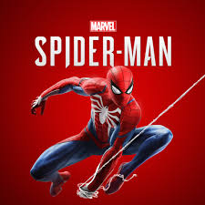

Spider-man Maximum Carnage

Esse foi o primero jogo do Spider-man a ser criado em (1994).
Spider-man
Esse foi o segundo jogo do Spider-man a ser criado em (2000).
SPIDER-MAN 2 ELECTRO
Esse foi o primero jogo do Spider-man a ser criado em (2001).
SPIDER-MAN Marvel

Esse foi o primero jogo do Spider-man a ser criado em (2018).
SPIDER-MAN 2 Marvel

Esse foi o primero jogo do Spider-man a ser criado em (2020).